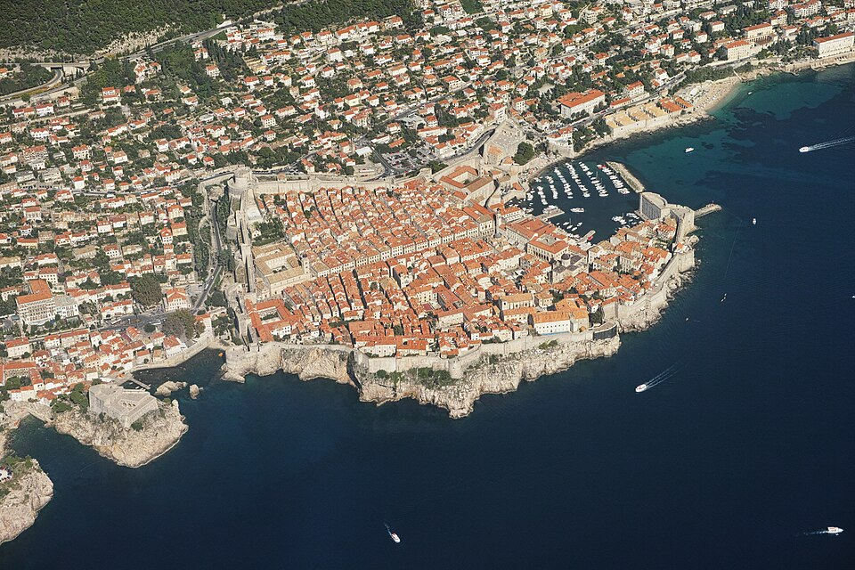
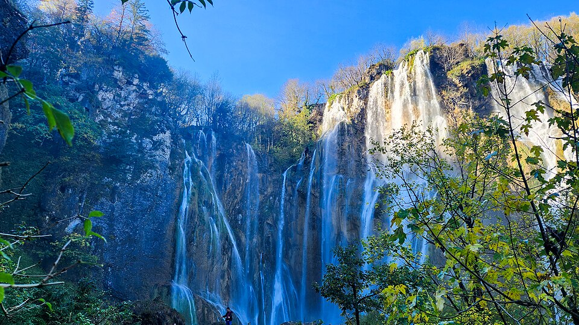
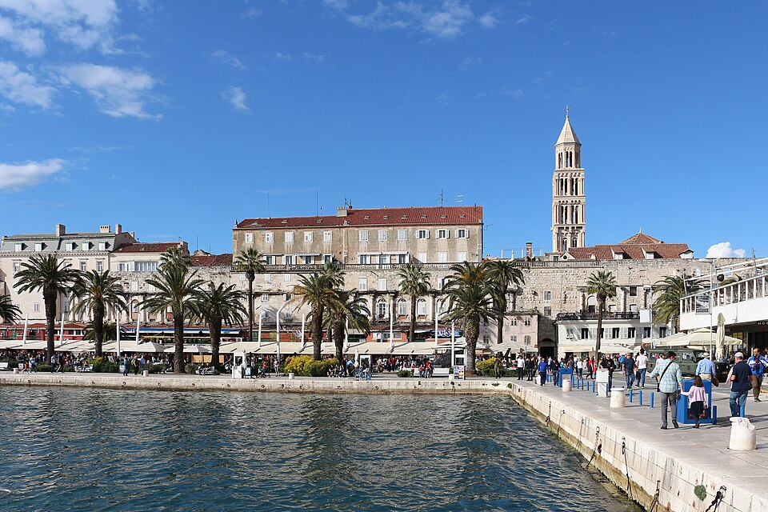
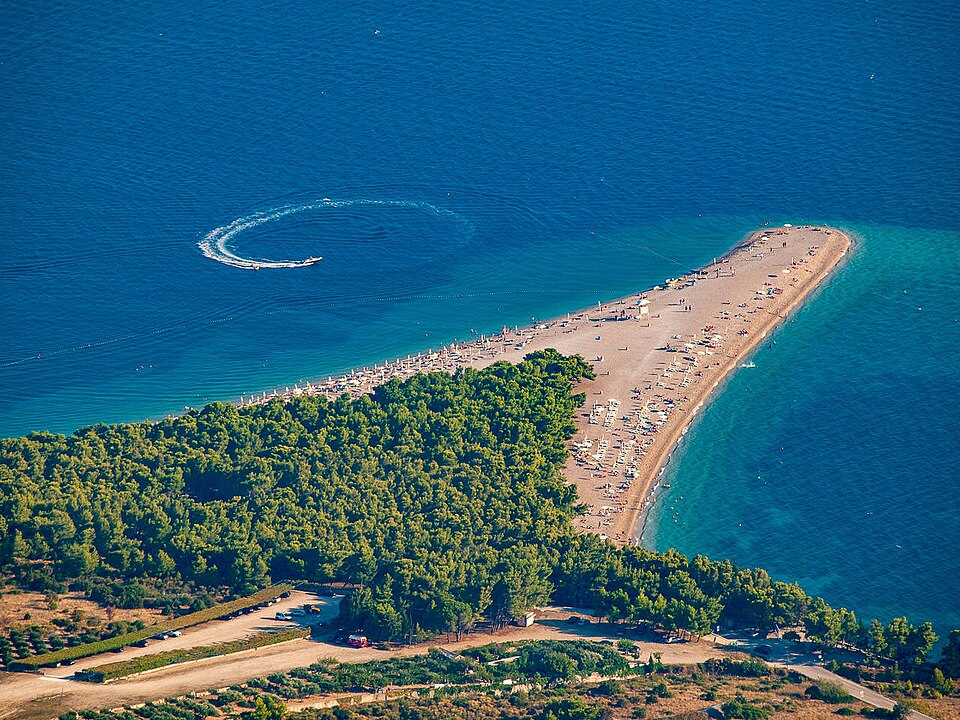

Croatia크로아티아 Hrvatska
아드리아해 해안과 내륙의 문화가 만나는 나라
- Capital
- 자그레브 (Zagreb)
- Language
- 크로아티아어
- Currency
- 유로 (EUR)

두브로브니크 구시가지Old Town of Dubrovnik
플리트비체 호수 국립공원Plitvice Lakes National Park
스플리트 디오클레티아누스 궁전Diocletian's Palace, Split
브라치섬 즐라트니 라트 해변Zlatni Rat beach, BračExplore Croatia
크로아티아 더 알아보기
아드리아해 연안의 해양도시와 디나르알프스·슬라보니아 내륙을 연결하는 나라. 로마시대 유산, 중세 해상무역, 근현대 산업, 다양한 지역 음식이 공존한다.


Latest updates
크로아티아 최근 뉴스
-
세르비아 전 경제장관 직권남용 혐의 체포…크로아티아 폐기물 스캔들 정치 쟁점화
발칸인사이트에 따르면 세르비아 전 경제장관 라데 바스타가 베오그라드 전력회사 재직 중 스포츠 단체에 부당한 기부금을 승인한 혐의로 체포됐습니다.
-
크로아티아 유해 폐기물 스캔들이 집권 HDZ 위협…세르비아에서는 시위대 사건 수사 부실 의혹
발칸인사이트 분석에 따르면 크로아티아에서 불법 투기된 유해 폐기물 문제가 10년째 집권 중인 HDZ에 큰 타격이 될 수 있습니다. 문제는 지역 주민의 분노에서 전국 이슈를 거쳐 EU 차원까지 번졌습니다(전문은 유료라 공개 부분만 확인).
-
도디크 “미 정책 불변 전망”·RS 헌법 개정 추진 시사…세르비아 사회당 의회 퇴출 분석
N1(Hina 보도)에 따르면 도디크는 11월 8일 미국 플로리다 행사에서 돌아와 RTRS에 트럼프 행정부의 대보스니아 정책이 미 의회 선거에서 민주당이 이겨도 크게 달라지지 않을 것이라고 말했습니다. 그는 고위대표사무소 역할이 약해질 것으로 내다봤습니다.